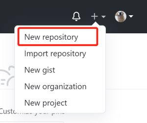
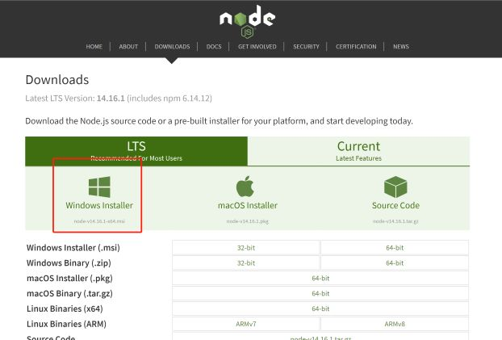
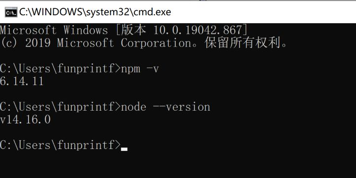

Windows下利用Hexo+Github Pages搭建个人博客
前置准备和知识
首先假定你已经拥有个人github账号，并且简单了解了hexo的相关知识。
安装并配置Git
进入Git官方下载页面https://gitforwindows.org/，下载对应的软件包进行安装，安装完毕以后输入：
1 | git version |
输出对应版本信息则说明安装成功。
接下来对Git进行初始化配置。
1 | git config --global user.name "myName" |
检查配置结果：
1 | git config --global -l |
控制台有输出你输入的名称和邮箱则配置成功。
配置github page
点击我们github右上角的”+”号，选择New repository新建一个仓库。

仓库我们命名为your_github_name.github.io，如:
1 | zhangsan.github.io |
配置SSH授权
鼠标右键打开Git bash，检查是否存在公钥和秘钥
1 | ls -al ~/.ssh |
默认情况下，公钥的文件名是以下之一
- id_dsa.pub
- id_ecdsa.pub
- id_ed25519.pub
- id_rsa.pub
看到列出的现有公钥和私钥对（例如id_rsa.pub和id_rsa），那么我们可以直接使用：
1 | cat ~/.ssh/id_rsa.pub |
会显示公钥的内容，我们复制下来。
如果你没有现有的公钥和私钥对，或者不希望使用现有的可用于连接的任何公钥，那么我们可以生成一个新的SSH密钥
简单来说呢，如果你不需要在使用公钥时输入密码，那么直接输入ssh-keygen -t rsa -b 4096 -C "your_email@example.com"后，点击三下回车即可。
具体点的步骤如下：
1.在终端中键入一下文本（将邮箱地址替换为自己邮箱地址）：
1 | ssh-keygen -t rsa -b 4096 -C "your_email@example.com" |
2.这时候会提示:Generating public/private rsa key pair.
然后会询问用户秘钥要保存的路径，按enter（回车）键则使用默认路径：Enter a file in which to save the key (/c/Users/you/.ssh/id_rsa):[Press enter]
3.输入密码和确认密码：如果不想再使用公钥的时候输入密码，可以不输入密码。（这里建议不输入密码，可以避免很多麻烦）
1 | Enter passphrase (empty for no passphrase): [Type a passphrase] |
回车。
1 | Enter same passphrase again: [Type passphrase again] |
再次回车
这时候输入ls -al ~/.ssh时，会显示.ssh目录下有我们生成的公钥秘钥对。这时候复制我们公钥的内容即可。
接下来我们点击github右上角的头像，选择Settings进入设置页面，选择左边SSH and GPG keys一项，点击new SSH key将复制内容添加key输入框内，完成添加。
接下来，我们测试是否成功
1 | ssh -T git@github.com |
出现类似You've successfully authenticated, but GitHub does not provide shell access.说明我们配置成功了。
安装node.js和hexo
安装node.js
进入node.js官方下载页面https://nodejs.org/en/download/，下载对应的安装包：

安装完毕之后，点击键盘Win+R快捷键cmd，接着输入 node -v命令，查看安装结果：

安装hexo
首先创建一个文件夹来放置Hexo。例如我们的文件夹路径为G:\blog\hexo，创建完毕后打开终端，进入hexo文件夹。
1 | G: |
利用npm安装hexo
1 | npm install hexo-cli -g |
安装完毕输入 hexo -v 检查安装结果
输入 hexo -init 初始化
输入 hexo -install 安装组件
输入 hexo -g 生成静态文件
接下来，hexo -s运行，打开 http://localhost:4000/ 即可看到我们的博客页面。
配置hexo主题
默认的主题可能满足不了小伙伴们的需求，大家可以在hexo的官网或者github上找到自己心仪的主题进行配置。流程都差不多，接下来我们以我自己使用的主题Butterfly为例，详细讲下配置流程。
首先在我们博客的根目录打开终端：
1 | git clone -b master https://github.com/jerryc127/hexo-theme-butterfly.git themes/butterfly |
如果我们没有 pug 以及 stylus 的渲染器的话，先安装：
1 | npm install hexo-renderer-pug hexo-renderer-stylus --save |
修改我们站点的_config.yml（注意不是主题theme目录下的配置文件），把主題改改为butterfly
终端中输入hexo -s，再次运行可以看到我们配置的主题
然后修改我们的仓库：
1 | #将repo链接替换成你的github page仓库地址 |
安装git部署插件 npm install hexo-deployer-git --save
打开终端并进入到 Hexo 文件系统中，创建一篇新博客 hexo new post HelloWorld
这时文件夹source/_posts 文件夹里会出现名字为HelloWorld.md的markdown文件。编辑好博客内容后，依次执行以下命令：
1 | hexo g #生成静态文件 |